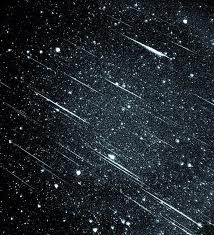

La actual definición de meteoroide fue dada por la Unión Astronómica Internacional (IAU) en su XI Asamblea General (1961):
"Un objeto sólido que se mueve en el espacio interplanetario, de un tamaño considerablemente más pequeño que un asteroide y considerablemente más grande que un átomo o molécula.
Como resultado del progreso inexorable de la instrumentación, esta definición ahora se juzga inaceptablemente vaga por su ambigüedad. La definición más común se propuso en 1995 y determina que el tamaño de los meteoroides debe estar en un rango entre 100 µm y 10 m de amplitud. Cualquier objeto más grande que esto, se considera un asteroide; y cualquiera más pequeño que esto, se considera polvo interplanetario. La mayoría de meteoritos terrestres, excepto aquellos metálicos de mayores dimensiones, proceden de meteoroides.
Ejemplos de meteoroides: 2003 YN107 , 2011 MD , 2011 CQ1
Composicion meteorito segun el color.

Como diferenciar de basura espacial:

• Muy rápido (11-72 km/s)
• Dura de 1 a 5 segundos
• Trayectoria picada
• Destello único/pocas piezas
(El color no lo diferencia ya que están compuestos por mismos elementos)
• Más lenta (7-8 km/s)
• Dura de 30 segundos a minutos
• Trayectoria casi horizontal
• Gran tren de chispas y fragmentos